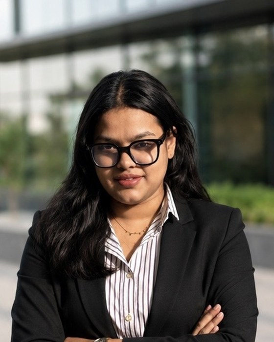

Kavya Agrawal
PhD Scholar, Department of Natural & Applied Sciences
TERI School of Advanced Studies, New Delhi
Predicting where India's groundwater becomes unsafe to drink, and who is exposed.

- 3contaminants studied: uranium, fluoride, arsenic
- 2journal articles, with 3 manuscripts in progress
- 7conference presentations since 2022
- 1stBest Paper Award, EHP NEXUS 2026
I am a PhD scholar working at the intersection of environmental systems, human activity and technology. My doctoral research focuses on large-scale prediction and risk assessment of groundwater contamination in India, integrating hydrogeochemistry and environmental geoinformatics with remote sensing, GIS and multi-source environmental data.
I work across uranium, fluoride and arsenic contamination, using machine learning, deep learning and spatial modelling to understand contamination patterns, their environmental controls and where risk is highest. My broader interests include population exposure, groundwater governance, climate and cryosphere systems, environmental change and water security. I am always open to new questions, methods and collaborations.
Supervisor: Prof. Chander Kumar Singh · Co-supervisor: Dr. Adwitiya Sinha
Recognition
ICSSR EHP NEXUS 2026, Gautam Buddha University
First Position and Best Paper Award
At the ICSSR-sponsored national conference The Nexus Imperative: Environment, Public Health and Policy for a Sustainable Future (27–28 April 2026), I presented a machine-learning-based framework for uranium risk assessment, population exposure and groundwater governance, and was awarded first position for the oral presentation.
Organised by the Department of Environmental Science, SoVSAS, Gautam Buddha University, Greater Noida.


Research interests
Groundwater quality and contamination (uranium, fluoride, arsenic) · hydrogeochemistry · remote sensing and GIS · machine learning, AutoML and explainable AI · multi-resolution modelling and downscaling · population exposure and groundwater governance · cryosphere and climate · water security.
News
- Jun 2026
Teaching Principles of Remote Sensing and Principles of GIS and GNSS in the MSc Geoinformatics programme.
- Apr 2026
First Position and Best Paper Award at ICSSR EHP NEXUS 2026, Gautam Buddha University, for machine-learning-based uranium risk assessment.
- Mar 2026
Rapporteur at the National Workshop on Geospatial Technology for Climate Action, Sustainability and Disaster Risk Reduction (TERI SAS with NRSC, ISRO).
- Feb 2026
Delegate at the World Sustainable Development Summit 2026.
- Jan 2026
Completed the PhD comprehensive examination, and submitted the uranium paper to a journal.
Beyond research
- Old coins
- Stamps
- Historic stories
- Photography
- Travel
- Badminton
- Dance